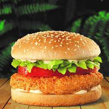

Chicken Burger

INGREDIENTS(2 SERVINGS)
-> 1 chicken breasts
-> 3 slices cheese slices
-> 2 and 3/4 tablespoon ranch dressing
-> 1/2 cucumber
->2 and 3/4 tablespoon salsa sauce
->2 burger buns
->3 pieces lettuce leaf
->2 tablespoon vegetable oil
Step 1:Stir fry chicken breast
To prepare this delicious burger recipe, put a pan over medium flame and heat some oil in it. Once the oil is hot enough, add chicken breasts in it and cook for 5 to 7 minutes.
Step 2 Cook chicken with salsa sauce
Next, add salsa sauce in it and cook for another 2 minutes. Add 3-4 cheese slices and then turn off the flame after a minute.
Step 3 Prepare the cheesy burgers
Meanwhile, spread bottom halves of buns with the ranch dressing. Add lettuce leaf over the dressing place cucumber slices over it. Add a cheese slice and then place the cheesy chicken over the cucumber slices. Cover the chicken breast with the remaining half and serve hot.